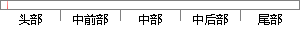

作品不存在知识产权争议，本毕业设计不含任何其他个人或集体已经发表过的作品和成果。
片段位置图

相似结果|
相似片段 1：除文中已经注明引用的内容外，本论文不含任何其他个人或集体已发发表或撰写过的作品成果．对本文的研究做出重要贡献的个人和集体，均已在文中以明确方式标明。本人完全意识到本声明的法律结果由本人承担。学位论文作哲签名∽年吩日
相似片段 2：除文中已经注明引用的内容外，本论文不含任何其他个人或集体已发表或撰写过的作品成果，对本文的研究做出重要贡献的个人和集体，均已在文中以明确方式标明。本人完全意识到本声明的法律结果由本人承担。学位论文作者签名： 周建国0。D牛年牛月5日
相似片段 3：除本文中已经注明引用的内容外，本论文不含任何其他个人或集体已发表或撰写过的作品成果。对本文的研究作出重要贡献的个人和集体，均已在本文中以明确方式标明。本人完全意识到本声明的法律结果由本人承担。学?作一：翕恸轸。lp∥9年n召目
相似片段 4：除文中已经注明引用的内容外，本论文不含任何其他个人或集体已发表或撰写过的作品成果．对本文的研究做出重要贡献的个人和集体，均已在文中以明确方式标明。本人完全意识到本声明的法律结果由本人承担。学位论文作者签名 杀曙虹am嘈；年7文月功日
相似片段 5：除文中已经注明引用的内容外，本论文不含任何其他个人或集体已发表或撰写过的作品成果。对本文的研究做出重要贡献的个人和集体，均己在文中以明确方式标明。本人完全意识到本声明的法律结果由本人承担。I 、重．学位论文作者签名：÷曩埔z卸嘿气∥7·mi‘年‘月c)日
相似片段 6：除文中已经注明引用的内容外，本论文不含任何其他个人或集体已发表或撰写过的作品成果．对本文的研究做出重要贡献的个人和集体，均已在文中以明确方式标明。本人完全意识到本声明的法律结果由本人承担。学位论文作者签名：粥考叶二口。三年寸月二1日
相似片段 7：除文中已经注明引用的内容外，本论文不含任何其他个人或集体已绎发表和撰写过的作品成果。对本文的研究做出重要贡献的个人和集体，均已在文中以明确方式标明。本人完全意谚{到本声明的法律结粜由本人承担。学位论文作存签名：纠嘞莞硼年歹，j)岁¨
相似片段 8：除文中已经注明引用的内容外，本论文不含任何其他个人或集体已发表或撰写过的作品成果。对本文的研究做出重要贡献的个人和集体，均已在文中以明确方式标明。本人完全意识到本声明的法律结果由本人承担。学位论文作者签名：∥3’年I』月芳日／7荔．∥i，安易．，了厂夕
相似片段 9：除文中已经注明引用的内容外，本论文不含任何其他个人或集体已发表或撰写过的作品成果。对本文的研究做出重要贡献的个人和集体，均已在文中以明确方式标明。本人完全意识到本声明的法律结果由本人承担。学位论文作者签名 需砂参删年／。7月，妒日
相似片段 10：除文中已经注明引用的内容外，本论文不含任何其他个人或集体已发表或撰写过的作品成果．对本文的研究做出重要贡献的个人和集体，均已在文中以明确方式标明。本人完全意识到本声明的法律结果由本人承担。学位论文作者签名：角怎、孜二。一D三、年十月二十日
|
※ 片段修改建议 ※
近似词参考：- 个人：小我 小我私家
- 集体：团体
- 已经：已
- 发表：颁发 揭晓 揭橥
- 成果：功效 结果
系统自动生成语句：作品不存在知识产权争议，本毕业设计不含任何其他小我或团体已颁发过的作品和功效。
注：本片段修改建议为系统自动生成，仅供参考。